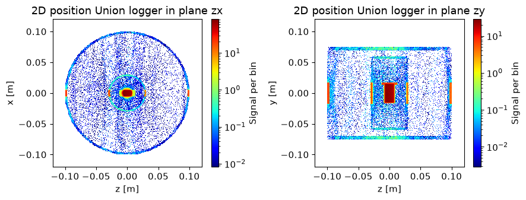
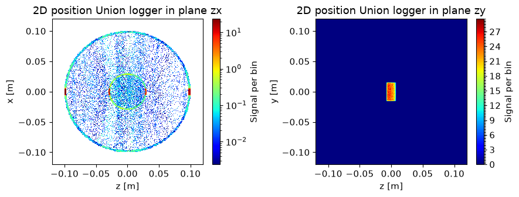
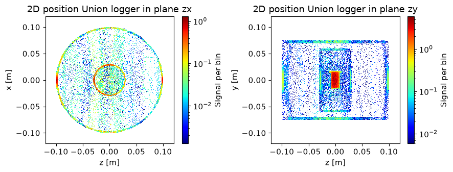
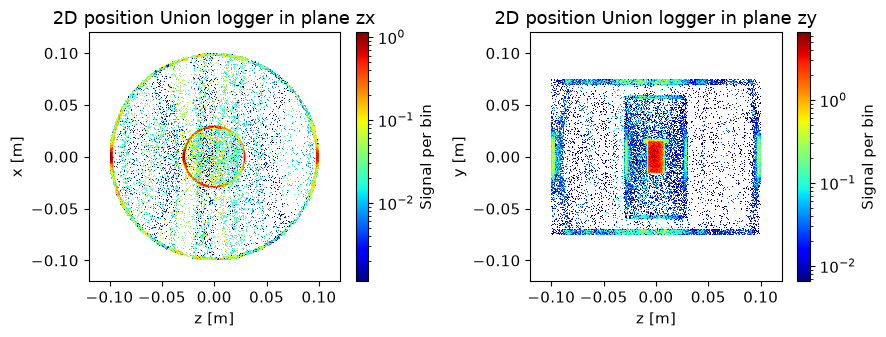
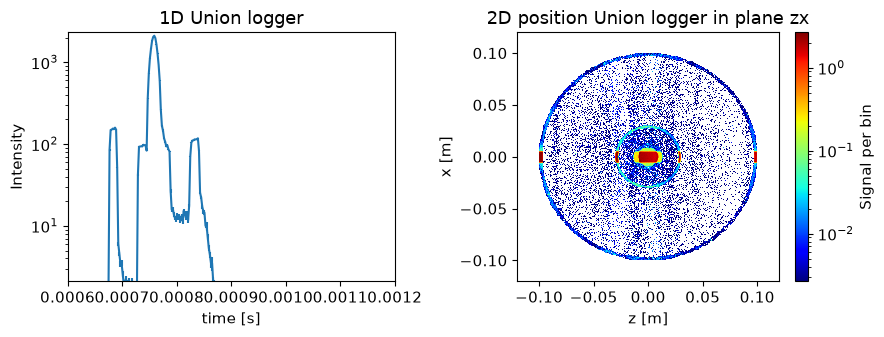
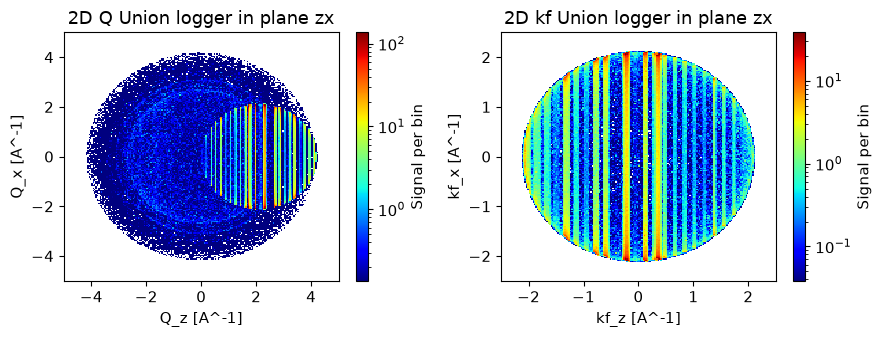
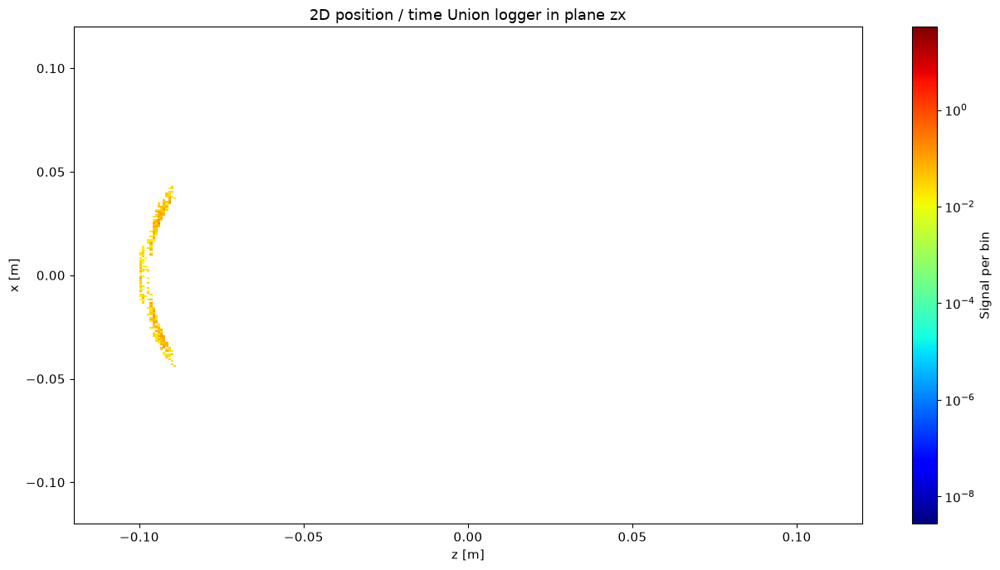
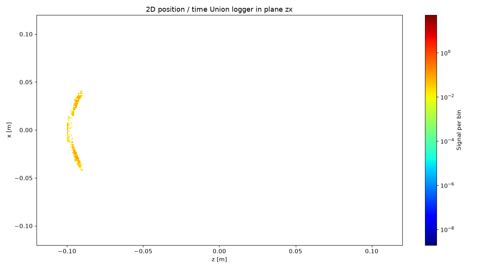
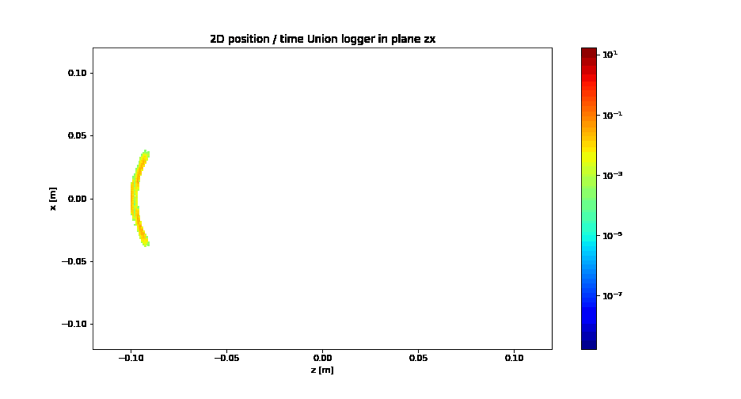

Visualizing what happens in Union master#
One disadvantage to collecting all the simulation in the Union_master component, is that it is not possible to insert monitors between the parts to check on the beam. This issue is addressed by adding logger components that can record scattering and absorption events that occurs during the simulation. This notebook will show examples on the usage of loggers and their features.
Set up materials and geometry to investigate#
First we set up the same mock cryostat we created in the advanced geometry tutorial to have an interesting system to investigate using the loggers.
import mcstasscript as ms
instrument = ms.McStas_instr("python_tutorial", input_path="run_folder")
if instrument.mccode_version == 3:
init = instrument.add_component("init", "Union_init") # This component has to be called init
Al_inc = instrument.add_component("Al_inc", "Incoherent_process")
Al_inc.sigma = 0.0082
Al_inc.unit_cell_volume = 66.4
Al_pow = instrument.add_component("Al_pow", "Powder_process")
Al_pow.reflections = '"Al.laz"'
Al = instrument.add_component("Al", "Union_make_material")
Al.process_string = '"Al_inc,Al_pow"'
Al.my_absorption = 100*0.231/66.4 # barns [m^2 E-28]*Å^3[m^3 E-30]=[m E-2], factor 100
Sample_inc = instrument.add_component("Sample_inc", "Incoherent_process")
Sample_inc.sigma = 3.4176
Sample_inc.unit_cell_volume = 1079.1
Sample_pow = instrument.add_component("Sample_pow", "Powder_process")
Sample_pow.reflections = '"Na2Ca3Al2F14.laz"'
Sample = instrument.add_component("Sample", "Union_make_material")
Sample.process_string = '"Sample_inc,Sample_pow"'
Sample.my_absorption = 100*2.9464/1079.1
src = instrument.add_component("source", "Source_div")
src.xwidth = 0.01
src.yheight = 0.035
src.focus_aw = 0.01
src.focus_ah = 0.01
src.lambda0 = instrument.add_parameter("wavelength", value=5.0,
comment="Wavelength in [Ang]")
src.dlambda = "0.01*wavelength"
src.flux = 1E13
sample_geometry = instrument.add_component("sample_geometry", "Union_cylinder")
sample_geometry.yheight = 0.03
sample_geometry.radius = 0.0075
sample_geometry.material_string='"Sample"'
sample_geometry.priority = 100
sample_geometry.set_AT([0,0,1], RELATIVE=src)
container = instrument.add_component("sample_container", "Union_cylinder")
container.set_RELATIVE(sample_geometry)
container.yheight = 0.03+0.003 # 1.5 mm top and button
container.radius = 0.0075 + 0.0015 # 1.5 mm sides of container
container.material_string='"Al"'
container.priority = 99
container_lid = instrument.add_component("sample_container_lid", "Union_cylinder")
container_lid.set_AT([0, 0.0155, 0], RELATIVE=container)
container_lid.yheight = 0.004
container_lid.radius = 0.013
container_lid.material_string='"Al"'
container_lid.priority = 98
inner_wall = instrument.add_component("cryostat_wall", "Union_cylinder")
inner_wall.set_AT([0,0,0], RELATIVE=sample_geometry)
inner_wall.yheight = 0.12
inner_wall.radius = 0.03
inner_wall.material_string='"Al"'
inner_wall.priority = 80
inner_wall_vac = instrument.add_component("cryostat_wall_vacuum", "Union_cylinder")
inner_wall_vac.set_AT([0,0,0], RELATIVE=sample_geometry)
inner_wall_vac.yheight = 0.12 - 0.008
inner_wall_vac.radius = 0.03 - 0.002
inner_wall_vac.material_string='"Vacuum"'
inner_wall_vac.priority = 81
outer_wall = instrument.add_component("outer_cryostat_wall", "Union_cylinder")
outer_wall.set_AT([0,0,0], RELATIVE=sample_geometry)
outer_wall.yheight = 0.15
outer_wall.radius = 0.1
outer_wall.material_string='"Al"'
outer_wall.priority = 60
outer_wall_vac = instrument.add_component("outer_cryostat_wall_vacuum", "Union_cylinder")
outer_wall_vac.set_AT([0,0,0], RELATIVE=sample_geometry)
outer_wall_vac.yheight = 0.15 - 0.01
outer_wall_vac.radius = 0.1 - 0.003
outer_wall_vac.material_string='"Vacuum"'
outer_wall_vac.priority = 61
instrument.show_components()
init Union_init
AT (0, 0, 0) ABSOLUTE
Al_inc Incoherent_process
AT (0, 0, 0) ABSOLUTE
Al_pow Powder_process
AT (0, 0, 0) ABSOLUTE
Al Union_make_material
AT (0, 0, 0) ABSOLUTE
Sample_inc Incoherent_process
AT (0, 0, 0) ABSOLUTE
Sample_pow Powder_process
AT (0, 0, 0) ABSOLUTE
Sample Union_make_material
AT (0, 0, 0) ABSOLUTE
source Source_div
AT (0, 0, 0) ABSOLUTE
sample_geometry Union_cylinder
AT (0, 0, 1) RELATIVE source
sample_container Union_cylinder
AT (0, 0, 0) RELATIVE sample_geometry
sample_container_lid Union_cylinder
AT (0, 0.0155, 0) RELATIVE sample_container
cryostat_wall Union_cylinder
AT (0, 0, 0) RELATIVE sample_geometry
cryostat_wall_vacuum Union_cylinder
AT (0, 0, 0) RELATIVE sample_geometry
outer_cryostat_wall Union_cylinder
AT (0, 0, 0) RELATIVE sample_geometry
outer_cryostat_wall_vacuum Union_cylinder
AT (0, 0, 0) RELATIVE sample_geometry
instrument.available_components("union")
Here are all components in the union category.
AF_HB_1D_process Union_abs_logger_nD
IncoherentPhonon_process Union_box
Incoherent_process Union_conditional_PSD
Inhomogenous_incoherent_process Union_conditional_standard
Mirror_surface Union_cone
NCrystal_process Union_cylinder
Non_process Union_init
PhononSimple_process Union_logger_1D
Powder_process Union_logger_2DQ
Single_crystal_process Union_logger_2D_kf
Template_process Union_logger_2D_kf_time
Template_surface Union_logger_2D_space
Texture_process Union_logger_2D_space_time
Union_abs_logger_1D_space Union_logger_3D_space
Union_abs_logger_1D_space_event Union_make_material
Union_abs_logger_1D_space_tof Union_master
Union_abs_logger_1D_space_tof_to_lambda Union_master_GPU
Union_abs_logger_1D_time Union_mesh
Union_abs_logger_2D_space Union_sphere
Union_abs_logger_event Union_stop
Adding Union logger components#
Union logger components need to be added before the Union_master component, as the master need to record the necessary information when the simulation is being performed. There are two different kind of Union logger components, the loggers that record scattering and the abs_loggers that record absorption. They have similar parameters and user interface. Here is a list of the currently available loggers:
Union_logger_1D
Union_logger_2D_space
Union_logger_2D_space_time
Union_logger_3D_space
Union_logger_2D_kf
Union_logger_2D_kf_time
Union_logger_2DQ
Union_abs_logger_1D_space
Union_abs_logger_1D_space_tof
Union_abs_logger_2D_space
The most commonly used logger is probably the Union_logger_2D_space, this component records spatial distribution of scattering, here are the available parameters.
instrument.component_help("Union_logger_2D_space")
___ Help Union_logger_2D_space _____________________________________________________
|optional parameter|required parameter|default value|user specified value|
target_geometry = "NULL" [string] // Comma seperated list of geometry names
that will be logged, leave empty for all
volumes (even not defined yet)
target_process = "NULL" [string] // Comma seperated names of physical
processes, if volumes are selected, one can
select Union_process names
D_direction_1 = "x" [string] // Direction for first axis ("x", "y" or "z")
D1_min = -5.0 [m] // Histogram boundery, min position value for first axis
D1_max = 5.0 [m] // Histogram boundery, max position value for first axis
n1 = 90.0 [1] // Number of bins for first axis
D_direction_2 = "z" [string] // Direction for second axis ("x", "y" or "z")
D2_min = -5.0 [m] // Histogram boundery, min position value for second axis
D2_max = 5.0 [m] // Histogram boundery, max position value for second axis
n2 = 90.0 [1] // Number of bins for second axis
filename = "NULL" [string] // Filename of produced data file
order_total = 0.0 [1] // Only log rays that scatter for the n'th time, 0 for
all orders
order_volume = 0.0 [1] // Only log rays that scatter for the n'th time in the
same geometry
order_volume_process = 0.0 [1] // Only log rays that scatter for the n'th time
in the same geometry, using the same process
logger_conditional_extend_index = -1.0 [1] // If a conditional is used with
this logger, the result of each
conditional calculation can be made
available in extend as a array called
"logger_conditional_extend", and one
would then acces
logger_conditional_extend[n] if
logger_conditional_extend_index is
set to n
init = "init" [string] // Name of Union_init component (typically "init",
default)
-------------------------------------------------------------------------------------
Setting up a 2D_space logger#
One can select which two axis to record using D_direction_1 and D_direction_2, and the range with for example D1_min and D1_max. When spatial information is recorded it is also important to place the logger at an appropriate position, here we center it on the sample position.
logger_zx = instrument.add_component("logger_space_zx", "Union_logger_2D_space")
logger_zx.set_RELATIVE(sample_geometry)
logger_zx.D_direction_1 = '"z"'
logger_zx.D1_min = -0.12
logger_zx.D1_max = 0.12
logger_zx.n1 = 300
logger_zx.D_direction_2 = '"x"'
logger_zx.D2_min = -0.12
logger_zx.D2_max = 0.12
logger_zx.n2 = 300
logger_zx.filename = '"logger_zx.dat"'
logger_zy = instrument.add_component("logger_space_zy", "Union_logger_2D_space")
logger_zy.set_RELATIVE(sample_geometry)
logger_zy.D_direction_1 = '"z"'
logger_zy.D1_min = -0.12
logger_zy.D1_max = 0.12
logger_zy.n1 = 300
logger_zy.D_direction_2 = '"y"'
logger_zy.D2_min = -0.12
logger_zy.D2_max = 0.12
logger_zy.n2 = 300
logger_zy.filename = '"logger_zy.dat"'
master = instrument.add_component("master", "Union_master")
if instrument.mccode_version == 3:
stop = instrument.add_component("stop", "Union_stop")
Running the simulation#
If mpi is installed, one can add mpi=N where N is the number of cores available to speed up the simulation.
instrument.set_parameters(wavelength=3.0)
instrument.settings(ncount=3E6, output_path="data_folder/union_loggers", suppress_output=True, mpi="auto")
data = instrument.backengine()
ms.make_sub_plot(data, log=True, orders_of_mag=4)

Interpreting the data#
The zx logger views the cryostat from the top, while the zy loggers shows it from the side. These are histograms of scattered intensity, and it is clear the majority of the scattering happens in the direct beam. There are however scattering events in all parts of our mock cryostat, as neutrons that scattered in either the sample or cryostat walls could go in any direction due to the incoherent scattering. The aluminium and sample also have powder scattering, so some patterns can be seen from the debye scherrer cones.
Logger targets#
It is possible to attach a logger to a certain geometry, or even a list of geometries using the target_geometry parameter. In that way one can for example view the scattering in the sample environment, while ignoring the sample. It is also possible to select a number of specific scattering processes to investigate with the target_process parameter. This is especially useful when working with a single crystal process, that only scatters when the Bragg condition is met.
Let us modify our existing loggers to view certain parts of the simulated system, and then rerun the simulation. If mpi is installed, one can add mpi=N where N is the number of cores available to speed up the simulation.
logger_zx.target_geometry = '"outer_cryostat_wall,cryostat_wall"'
logger_zy.target_geometry = '"sample_geometry"'
data = instrument.backengine()
ms.make_sub_plot(data, log=[True, False], orders_of_mag=4)

Scattering order#
All loggers also have the option to only record given scattering orders. For example only record the second scattering.
order_total : Match given number of scattering events, counting all scattering events in the system
order_volume : Match given number of scattering events, only counting events in the current volume
order_volume_process : Match given number of scattering events, only counting events in current volume with current process
We can modify our previous loggers to test out these features. The zx logger viewing from above will keep the target, but we remove the sample target on the zy logger, which is done by setting the taget_geometry to NULL. We choose to look at the second scattering event.
logger_zx.order_total = 2
logger_zy.target_geometry = '"NULL"'
logger_zy.order_total = 2
data = instrument.backengine()
ms.make_sub_plot(data, log=True, orders_of_mag=3)

Demonstration of additional logger components#
Here we add a few more loggers to showcase what kind of information that can be displayed.
1D logger that logs scattered intensity as function of time
2D abs_logger that logs absorption projected onto the scattering plane
2DQ logger that logs scattering vector projected onto the scattering plane
2D kf logger that logs final wavevector projected onto the scattering plane
logger_1D = instrument.add_component("logger_1D", "Union_logger_1D", before="master")
logger_1D.variable = '"time"'
logger_1D.min_value = 0.0006
logger_1D.max_value = 0.0012
logger_1D.n1 = 300
logger_1D.filename = '"logger_1D_time.dat"'
abs_logger_zx = instrument.add_component("abs_logger_space_zx", "Union_abs_logger_2D_space",
before="master")
abs_logger_zx.set_AT([0,0,0], RELATIVE=sample_geometry)
abs_logger_zx.D_direction_1 = '"z"'
abs_logger_zx.D1_min = -0.12
abs_logger_zx.D1_max = 0.12
abs_logger_zx.n1 = 300
abs_logger_zx.D_direction_2 = '"x"'
abs_logger_zx.D2_min = -0.12
abs_logger_zx.D2_max = 0.12
abs_logger_zx.n2 = 300
abs_logger_zx.filename = '"abs_logger_zx.dat"'
logger_2DQ = instrument.add_component("logger_2DQ", "Union_logger_2DQ", before="master")
logger_2DQ.Q_direction_1 = '"z"'
logger_2DQ.Q1_min = -5.0
logger_2DQ.Q1_max = 5.0
logger_2DQ.n1 = 200
logger_2DQ.Q_direction_2 = '"x"'
logger_2DQ.Q2_min = -5.0
logger_2DQ.Q2_max = 5.0
logger_2DQ.n2 = 200
logger_2DQ.filename = '"logger_2DQ.dat"'
logger_2D_kf = instrument.add_component("logger_2D_kf", "Union_logger_2D_kf",
before="master")
logger_2D_kf.Q_direction_1 = '"z"'
logger_2D_kf.Q1_min = -2.5
logger_2D_kf.Q1_max = 2.5
logger_2D_kf.n1 = 200
logger_2D_kf.Q_direction_2 = '"x"'
logger_2D_kf.Q2_min = -2.5
logger_2D_kf.Q2_max = 2.5
logger_2D_kf.n2 = 200
logger_2D_kf.filename = '"logger_2D_kf.dat"'
Runnig the simulation#
We now rerun the simulation with the new loggers. If mpi is installed, one can add mpi=N where N is the number of cores available to speed up the simulation.
data = instrument.backengine()
ms.name_plot_options("logger_space_zx", data, log=True, orders_of_mag=3)
ms.name_plot_options("logger_space_zy", data, log=True, orders_of_mag=3)
ms.name_plot_options("abs_logger_space_zx", data, log=True, orders_of_mag=3)
ms.name_plot_options("logger_1D", data, log=True, orders_of_mag=3)
ms.name_plot_options("logger_2DQ", data, log=True, orders_of_mag=3)
ms.name_plot_options("logger_2D_kf", data, log=True, orders_of_mag=3)
ms.make_sub_plot(data[0:2])
ms.make_sub_plot(data[2:4])
ms.make_sub_plot(data[4:6])



Interpreting the data#
We see the scattered intensity as a function of time, here the peaks correspond to the direct beam intersecting the sides of the cryostat and sample. The source used release all neutrons at time 0, so it is a perfect pulse.
The absorption monitor shows an image very similar to the scattered intensity, but this could be very different, for example when using materials meant as shielding.
The 2D scattering vector is interesting, it shows a small sphere made of vertical lines, these are powder Bragg peaks. Since the wavevector is almost identical for all incoming neutrons, the first scattering can only access this smaller region of the space. The larger circle is incoherent scattering from second and later scattering events, where the incoming wavevector could be any direction since a scattering already happened.
The 2D final wavevector plot shows mainly the powder Bragg peaks.
Animations and time series#
Several of the Union loggers sets up more than one McStas monitor, these include:
Union_logger_3D_space
Union_logger_2D_space_time
Union_logger_2D_kf_time
The Union_logger_2D_space_time for example sets up a number of Union_logger_2D_space monitors that are limited to specific time intervals. This can be used to make an animation of the monitor, which we will demonstrate here.
log_2D_st = instrument.add_component("logger_2D_space_time", "Union_logger_2D_space_time",
before="master")
log_2D_st.time_bins = 36
log_2D_st.time_min = 0.0007
log_2D_st.time_max = 0.0011
log_2D_st.set_AT([0,0,0], RELATIVE=sample_geometry)
log_2D_st.D_direction_1 = '"z"'
log_2D_st.D1_min = -0.12
log_2D_st.D1_max = 0.12
log_2D_st.n1 = 300
log_2D_st.D_direction_2 = '"x"'
log_2D_st.D2_min = -0.12
log_2D_st.D2_max = 0.12
log_2D_st.n2 = 300
log_2D_st.filename = '"logger_2D_space_time.dat"'
data = instrument.backengine()
Creating an animation#
The plotter in McStasScript can create animations when supplied with many McStasData objects. We use name_search to find all the data from the relevant logger, and then a for loop to set plot options for each of them. Then the plotter can make an animation, which is saved as a gif.
ani_data = ms.name_search("logger_2D_space_time", data)
for frame in ani_data:
frame.set_plot_options(log=True, colormap="jet")
ms.make_animation(ani_data, filename="animation_demo", fps=2)

2026-07-24 13:59:43,521 WARNING:MovieWriter imagemagick unavailable; using Pillow instead.
Saving animation with filename : "animation_demo.gif"
Viewing the animation#
Some problem in the jupyter notebook prevents playing the gif directly, but it can be played from markdown. One has to refresh this cell when a new animation is written. It should be visible that the beam enters the cryostat from the left, scatters of the sample and illuminates the entire cryostat. Running this simulation with a larger ncount and more time_bins in the monitor will reveal more details in what happens. This is available below, but commented out as the simulation can take some time.

Optional: Increasing resolution#
Running this simulation with a larger ncount and more time_bins in the monitor will reveal more details in what happens. This is available below, but commented out as the simulation can take some time.
log_2D_st.time_bins = 128
instrument.settings(ncount=2E8, mpi=4)
#data = instrument.backengine()
#ani_data = ms.name_search("logger_2D_space_time", data)
#for frame in ani_data:
# ms.set_plot_options(log=True, colormap="jet", orders_of_mag=6)
#
#ms.make_animation(ani_data, filename="animation_demo_long", fps=5)
Viewing the animation#
In the longer animation it is more evident that scattering from the aluminium hits the top and bottom of the outer cylinder.
